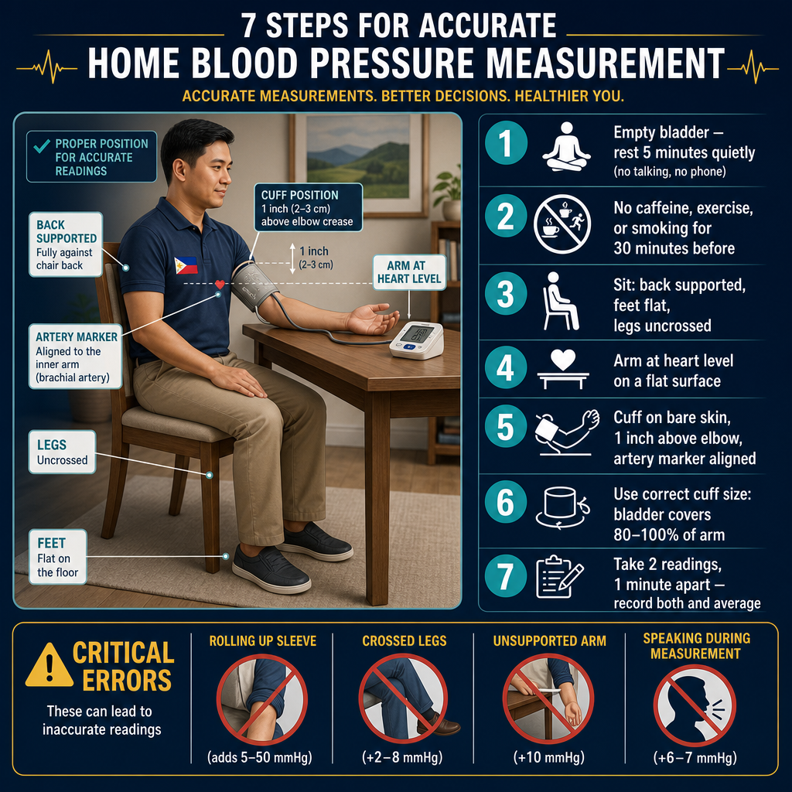
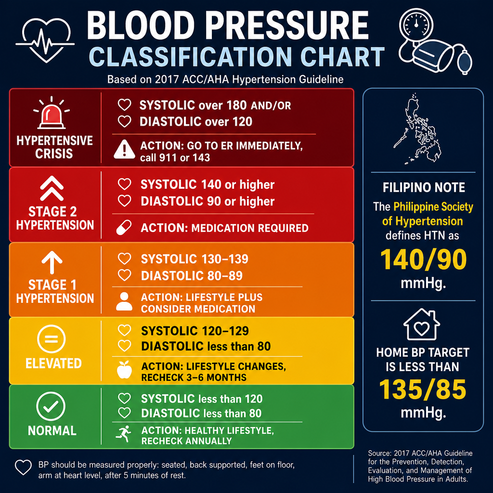

What is High Blood Pressure?Ano ang Mataas na Presyon ng Dugo?Unsa ang Taas nga Presyon sa Dugo?

Home blood pressure monitoring is more reliable than office readings. Measure in the morning before medications, seated quietly for 5 minutes, twice daily for one week.Ang pagsubaybay ng presyon ng dugo sa bahay ay mas mapagkakatiwalaan kaysa sa mga pagbabasa sa klinika. Sukatín sa umaga bago ang mga gamot, nakaupo nang tahimik nang 5 minuto, dalawang beses sa isang araw sa loob ng isang linggo.Ang pagbantay sa presyon sa dugo sa balay mas masaligan kaysa sa mga pagbasa sa klinika. Sukta sa buntag sa wala pa ang mga medisina, naglingkod nga hilum sulod sa 5 minuto, duha ka beses sa usa ka adlaw sulod sa usa ka semana.
Every time your heart beats, it pushes blood through your arteries. Blood pressure is the force of that blood against the artery walls. When this force is consistently too high, it silently damages your heart, kidneys, brain, and eyes — often for years before any symptoms appear.Sa bawat tibok ng inyong puso, itinutulak nito ang dugo sa pamamagitan ng inyong mga ugat. Ang presyon ng dugo ay ang lakas ng dugong iyon laban sa mga dingding ng ugat. Kapag ang lakas na ito ay lagi nang masyadong mataas, tahimik nitong nasisira ang inyong puso, bato, utak, at mata — madalas sa loob ng maraming taon bago lumabas ang anumang sintomas.Sa matag pukpok sa inyong kasingkasing, giitsa niini ang dugo sa tibuok inyong mga ugat. Ang presyon sa dugo mao ang kusog sa maong dugo batok sa mga bungbong sa ugat. Kon kining kusog kanunay nga taas kaayo, hilom niining ginadaot ang inyong kasingkasing, mga bato, utok, ug mata — kasagaran sulod sa daghang tuig sa wala pa makit-an ang bisan unsang sintomas.
Hypertension is defined as a blood pressure of 140/90 mmHg or higher on repeated measurements. It is the single most common preventable cause of heart attack, stroke, and kidney failure in the Philippines.Ang hypertension ay tinukuyan bilang presyon ng dugo na 140/90 mmHg o mas mataas sa paulit-ulit na pagsukat. Ito ang pinaka-karaniwang mapipigilan na sanhi ng atake sa puso, stroke, at pagkabigo ng bato sa Pilipinas.Ang hypertension gihulagway ingon presyon sa dugo nga 140/90 mmHg o mas taas sa paulit-ulit nga pagsukat. Kini ang pinaka-komon nga mapugngan nga hinungdan sa atake sa kasingkasing, stroke, ug pagpalya sa bato sa Pilipinas.
The "silent killer"Ang "tahimik na mamamatay"Ang "hilom nga mamamatay"
Most people with hypertension feel completely normal — no headache, no symptoms. By the time symptoms appear, significant organ damage has often already occurred. This is why regular blood pressure monitoring is essential even when you feel well.Karamihan sa mga taong may hypertension ay ganap na normal ang nararamdaman — walang sakit ng ulo, walang sintomas. Sa oras na lumabas ang mga sintomas, kadalasan ay nagkaroon na ng malaking pinsala sa mga organo. Kaya naman ang regular na pagsubaybay ng presyon ng dugo ay mahalaga kahit na maayos ang pakiramdam ninyo.Kadaghanan sa mga tawo nga adunay hypertension hingpit nga normal ang gibati — walay sakit sa ulo, walay sintomas. Sa panahon nga mogawas ang mga sintomas, kasagaran aduna nay dakong kadaot sa mga organo. Mao kini ngano nga ang regular nga pagbantay sa presyon sa dugo importante bisan pa maayo ang inyong gibati.
How common is it?Gaano ito kadalas?Unsa kadaghan kini?
Approximately 1 in 4 Filipino adults has hypertension — and many don't know it. Among patients with CKD or diabetes, the proportion is even higher, and the urgency of control is even greater.Humigit-kumulang 1 sa 4 na matatandang Pilipino ay may hypertension — at marami ang hindi ito alam. Sa mga pasyenteng may CKD o diabetes, mas mataas pa ang proporsyon, at mas napakahalaga ng pagkontrol.Mga 1 sa 4 ka hamtong nga Pilipino adunay hypertension — ug daghan ang wala mahibalo niini. Sa mga pasyente nga adunay CKD o diabetes, mas taas pa ang proporsyon, ug mas hinungdanon ang pagkontrol.
Understanding Blood Pressure ReadingsPag-unawa sa mga Pagbabasa ng Presyon ng DugoPagsabut sa mga Pagbasa sa Presyon sa Dugo
A blood pressure reading has two numbers. The top number (systolic) is the pressure when your heart beats. The bottom number (diastolic) is the pressure when your heart rests between beats.Ang pagbabasa ng presyon ng dugo ay may dalawang numero. Ang itaas na numero (systolic) ay ang presyon kapag tumitibok ang inyong puso. Ang ibabang numero (diastolic) ay ang presyon kapag nagpapahinga ang inyong puso sa pagitan ng mga tibok.Ang pagbasa sa presyon sa dugo adunay duha ka numero. Ang ibabaw nga numero (systolic) mao ang presyon kon mobukto ang inyong kasingkasing. Ang ubos nga numero (diastolic) mao ang presyon kon nagpahulay ang inyong kasingkasing tali sa mga bukto.

Blood pressure classificationKlasipikasyon ng presyon ng dugoKlasipikasyon sa presyon sa dugo
White coat hypertensionWhite coat hypertensionWhite coat hypertension
Some people have elevated readings only at the clinic — normal at home. This is called "white coat" hypertension and is not benign. Home monitoring over several days gives a more accurate picture of your true blood pressure and guides treatment decisions more reliably.Ang ilang mga tao ay may mataas na pagbabasa lamang sa klinika — normal sa bahay. Ito ay tinatawag na "white coat" hypertension at hindi ito walang panganib. Ang pagsubaybay sa bahay sa loob ng ilang araw ay nagbibigay ng mas tumpak na larawan ng inyong tunay na presyon ng dugo at mas mapagkakatiwalaang gabay sa mga desisyon sa paggamot.Ang uban nga mga tawo adunay taas nga pagbasa lamang sa klinika — normal sa balay. Gitawag kini nga "white coat" hypertension ug dili kini walay risgo. Ang pagbantay sa balay sulod sa pipila ka adlaw naghatag ug mas tukma nga hulagway sa inyong tinuod nga presyon sa dugo ug mas kasaligan nga giya sa mga desisyon sa pagtambal.
What Uncontrolled Hypertension Does to Your BodyAno ang Ginagawa ng Hindi Kontroladong Hypertension sa Inyong KatawanUnsa ang Gibuhat sa Wala Makontrol nga Hypertension sa Inyong Lawas
Persistently elevated blood pressure damages blood vessels throughout the body. The organs most vulnerable are those with the richest blood supply and most delicate vessels.Ang patuloy na mataas na presyon ng dugo ay nagdudulot ng pinsala sa mga daluyan ng dugo sa buong katawan. Ang mga organo na pinaka-bulnerable ay ang mga may pinakamayamang suplay ng dugo at pinakamaselang mga daluyan.Ang padayon nga taas nga presyon sa dugo nagadaot sa mga ugat sa tibuok lawas. Ang mga organo nga labing madaot mao ang mga adunay pinakadato nga suplay sa dugo ug pinaka-delikadong mga ugat.

HeartPusoKasingkasing
The heart works harder against high resistance, causing it to enlarge and stiffen. This leads to heart failure, coronary artery disease, and irregular heart rhythms (atrial fibrillation).Ang puso ay mas mahirap na nagtatrabaho laban sa mataas na resistensya, na nagiging sanhi ng pagpalaki at pagtigas nito. Ito ay humahantong sa heart failure, coronary artery disease, at hindi regular na tibok ng puso (atrial fibrillation).Ang kasingkasing mas kusog nga nagtrabaho batok sa taas nga resistensya, nga naghimo niini nga mopadako ug motig-a. Kini nagdala sa heart failure, coronary artery disease, ug dili regular nga tibok sa kasingkasing (atrial fibrillation).
KidneysBatoMga Bato
High pressure damages the tiny arterioles feeding each glomerulus. Over years this causes hypertensive nephrosclerosis — progressive scarring and CKD. Uncontrolled hypertension is the #2 cause of kidney failure in the Philippines.Ang mataas na presyon ay nagdudulot ng pinsala sa maliliit na arteriola na nagpapakain sa bawat glomerulus. Sa loob ng maraming taon ito ay nagdudulot ng hypertensive nephrosclerosis — progresibong pagkapeklat at CKD. Ang hindi kontroladong hypertension ay ika-2 pinaka-sanhi ng pagkabigo ng bato sa Pilipinas.Ang taas nga presyon nagadaot sa gagmay nga arteriola nga nagpakaon sa matag glomerulus. Sulod sa daghang tuig kini nagdala sa hypertensive nephrosclerosis — progresibo nga pagpeklat ug CKD. Ang wala makontrol nga hypertension mao ang ika-2 hinungdan sa pagpalya sa bato sa Pilipinas.
BrainUtakUtok
Damaged cerebral arteries are prone to rupture (hemorrhagic stroke) or blockage (ischemic stroke). Hypertension also causes white matter changes that impair memory and cognition over time.Ang mga nasirang ugat sa utak ay madaling mapunit (hemorrhagic stroke) o masara (ischemic stroke). Ang hypertension ay nagdudulot din ng mga pagbabago sa white matter na nagpapahina ng memorya at pag-iisip sa paglipas ng panahon.Ang mga nadaot nga ugat sa utok dali mapusgay (hemorrhagic stroke) o masalgan (ischemic stroke). Ang hypertension nagadala usab sa mga pagbag-o sa white matter nga nagpahuyang sa memorya ug pag-isip sa paglabay sa panahon.
EyesMataMga Mata
Hypertensive retinopathy damages the delicate vessels of the retina. Advanced cases cause vision loss. An eye exam can reveal the severity of vascular damage throughout your body.Ang hypertensive retinopathy ay nagdudulot ng pinsala sa maselang mga daluyan ng retina. Ang mga advanced na kaso ay nagdudulot ng pagkawala ng paningin. Ang pagsusuri sa mata ay maaaring magsiwalat ng kalubhaan ng vascular damage sa buong katawan ninyo.Ang hypertensive retinopathy nagadaot sa delikadong mga ugat sa retina. Ang mga advanced nga kaso nagdala sa pagkawala sa panan-aw. Ang pagsusi sa mata makapadayag sa grabidad sa vascular damage sa tibuok inyong lawas.
ArteriesMga UgatMga Ugat
Chronic high pressure accelerates atherosclerosis — the buildup of plaques in artery walls. This increases risk of heart attack, peripheral artery disease, and aortic aneurysm.Ang matagal na mataas na presyon ay nagpapabilis ng atherosclerosis — ang pagtitipon ng mga plaque sa mga dingding ng ugat. Pinapataas nito ang panganib ng atake sa puso, peripheral artery disease, at aortic aneurysm.Ang kronikong taas nga presyon nagpaabtik sa atherosclerosis — ang pagtipon sa mga plaque sa mga bungbong sa ugat. Kini nagdugang sa risgo sa atake sa kasingkasing, peripheral artery disease, ug aortic aneurysm.
Blood Pressure Medications — What They DoMga Gamot para sa Presyon ng Dugo — Ano ang Ginagawa NilaMga Medisina para sa Presyon sa Dugo — Unsa ang Ilang Gibuhat
Most patients with Stage 2 hypertension or hypertension with organ damage require one or more medications. These are not a sign of failure — they are powerful tools that protect your organs when lifestyle changes alone are insufficient.Karamihan sa mga pasyente na may Stage 2 hypertension o hypertension na may pinsala sa organo ay nangangailangan ng isa o higit pang mga gamot. Hindi ito tanda ng kabiguan — sila ay makapangyarihang kagamitan na nagpoprotekta sa inyong mga organo kapag ang mga pagbabago sa pamumuhay ay hindi sapat.Kadaghanan sa mga pasyente nga adunay Stage 2 hypertension o hypertension nga adunay kadaot sa organo nanginahanglan ug usa o dugang pa nga mga medisina. Kini dili timaan sa kapakyasan — kini mga gamhanang himan nga nagpanalipod sa inyong mga organo kon ang mga pagbag-o sa pamumuhay dili igo.

| Drug ClassKlase ng GamotKlase sa Medisina | ExamplesMga HalimbawaMga Pananglitan | How it worksPaano gumaganaUnsaon kini paggana | Best forPinakamainam para saLabing maayo para sa |
|---|---|---|---|
| ACE Inhibitors | Ramipril, Enalapril, Lisinopril | Block angiotensin II production — dilate blood vessels and reduce kidney filtration pressureHinahadlangan ang produksyon ng angiotensin II — pinalawak ang mga daluyan ng dugo at binabawasan ang presyon sa pagsala ng batoGibalda ang produksyon sa angiotensin II — gipadako ang mga ugat ug gipababa ang presyon sa pagsala sa bato | CKD, diabetes, heart failure, proteinuriaCKD, diabetes, heart failure, proteinuriaCKD, diabetes, heart failure, proteinuria |
| ARBs | Losartan, Irbesartan, Telmisartan, Valsartan | Block angiotensin II receptor — same effect as ACE inhibitors but better tolerated (no cough)Hinahadlangan ang receptor ng angiotensin II — parehong epekto sa ACE inhibitors ngunit mas mahusay na natatanggap (walang ubo)Gibalda ang receptor sa angiotensin II — sama nga epekto sa ACE inhibitors apan mas maayo nga gidawat (walay ubo) | CKD, diabetes, proteinuria — preferred when ACE inhibitor causes coughCKD, diabetes, proteinuria — ginusto kapag ang ACE inhibitor ay nagdudulot ng uboCKD, diabetes, proteinuria — gipalabi kon ang ACE inhibitor nagdala og ubo |
| Calcium Channel Blockers | Amlodipine, Nifedipine | Relax arterial smooth muscle by blocking calcium entry — reduce vascular resistancePinapaluwag ang makinis na kalamnan ng ugat sa pamamagitan ng paghahadlang ng pagpasok ng calcium — binabawasan ang vascular resistanceGiparelaks ang makinis nga kalamnan sa ugat pinaagi sa pagbalda sa pagsulod sa calcium — gipababa ang vascular resistance | Elderly patients, isolated systolic hypertension, anginaMga matatandang pasyente, isolated systolic hypertension, anginaMga tigulang nga pasyente, isolated systolic hypertension, angina |
| Thiazide Diuretics | Hydrochlorothiazide, Chlorthalidone | Increase sodium and water excretion — reduce blood volume and vessel tonePinapataas ang paglabas ng sodium at tubig — binabawasan ang dami ng dugo at tono ng ugatGipadako ang pagluwas sa sodium ug tubig — gipababa ang dami sa dugo ug tono sa ugat | Most patients; combination therapy; Black/Filipino patientsKaramihan sa mga pasyente; kombinasyong paggamot; mga pasyenteng Itim/PilipinoKadaghanan sa mga pasyente; kombinasyong pagtambal; mga pasyenteng Itom/Pilipino |
| Beta Blockers | Carvedilol, Metoprolol, Bisoprolol | Reduce heart rate and cardiac output — lower BP and protect the heartBinabawasan ang tibok ng puso at cardiac output — pinabababa ang BP at pinoprotektahan ang pusoGipababa ang tibok sa kasingkasing ug cardiac output — gipababa ang BP ug giprotektahan ang kasingkasing | Post-heart attack, heart failure, atrial fibrillationPagkatapos ng atake sa puso, heart failure, atrial fibrillationHuman sa atake sa kasingkasing, heart failure, atrial fibrillation |
Never stop your medication because your BP is normalHuwag ihinto ang inyong gamot dahil normal na ang BPAyaw ihunong ang inyong medisina kay normal na ang BP
Your blood pressure is normal because you are taking the medication — not evidence that you no longer need it. Stopping abruptly can cause rebound hypertension and dangerous spikes. Always consult your doctor before any medication change.Ang inyong presyon ng dugo ay normal dahil iniinom ninyo ang gamot — hindi ito katibayan na hindi na kayo nangangailangan nito. Ang biglang pagtigil ay maaaring magdulot ng rebound hypertension at mapanganib na pagtaas. Palaging kumonsulta sa inyong doktor bago gumawa ng anumang pagbabago sa gamot.Ang inyong presyon sa dugo normal kay nag-inom kamo sa medisina — kini dili ebidensya nga wala na kamo nanginahanglan niini. Ang kalit nga paghunong mahimong magdala sa rebound hypertension ug delikadong pagtaas. Kanunay mangonsulta sa inyong doktor sa wala pa magbag-o og bisan unsang medisina.
Lifestyle Changes That Actually WorkMga Pagbabago sa Pamumuhay na Talagang EpektiboMga Pagbag-o sa Pamumuhay nga Tinuod nga Nagtrabaho
Each lifestyle modification below has a quantified, evidence-based blood pressure reduction. Combined, they can lower BP by 15–20 mmHg — comparable to adding a second medication.Ang bawat pagbabago sa pamumuhay sa ibaba ay may nasukat, napatunayan na pagbaba ng presyon ng dugo. Sama-sama, maaari nilang ibaba ang BP ng 15–20 mmHg — katumbas ng pagdaragdag ng pangalawang gamot.Ang matag pagbag-o sa pamumuhay sa ubos adunay nasukat, ebidensya-base nga pagbaba sa presyon sa dugo. Magkahiusa, kini makapababa sa BP og 15–20 mmHg — katumbas sa pagdugang og ikaduhang medisina.

Reduce sodium — target <2,000 mg/day (1 teaspoon of salt)Bawasan ang sodium — target na <2,000 mg/araw (1 kutsarita ng asin)Pagkunhod sa sodium — target nga <2,000 mg/adlaw (1 kutsarita nga asin)
Sodium causes water retention and vasoconstriction. Reducing it lowers systolic BP by 5–8 mmHg. In the Filipino diet, the biggest sources are patis (fish sauce), toyo (soy sauce), bagoong, instant noodles, and processed meats. Cook with herbs, calamansi, and garlic instead of salt.Ang sodium ay nagdudulot ng pagtatago ng tubig at vasoconstriction. Ang pagbabawas nito ay nagpapababa ng systolic BP ng 5–8 mmHg. Sa pagkain ng mga Pilipino, ang pinakamalaking pinagkukunan ay ang patis, toyo, bagoong, instant noodles, at mga processed na karne. Magluto gamit ang mga herbs, calamansi, at bawang sa halip na asin.Ang sodium nagdala sa pagpugong sa tubig ug vasoconstriction. Ang pagkunhod niini nagpababa sa systolic BP og 5–8 mmHg. Sa pagkaon sa mga Pilipino, ang pinakadakog tinubdan mao ang patis, toyo, bagoong, instant noodles, ug mga processed nga karne. Magluto gamit ang mga herbs, calamansi, ug bawang imbes nga asin.
Follow a DASH-Filipino diet patternSundin ang DASH-Filipino na pattern ng diyetaSunda ang DASH-Filipino nga pattern sa diyeta
High in vegetables, fruits, and legumes — rich in potassium, magnesium, and calcium that naturally lower blood pressure. Local options: kangkong, pechay, sayote, ampalaya, camote tops, banana (moderate portions), and mongo beans. Potassium counteracts sodium's BP-raising effect.Mataas sa mga gulay, prutas, at legumes — mayaman sa potassium, magnesium, at calcium na natural na nagpapababa ng presyon ng dugo. Mga lokal na pagpipilian: kangkong, pechay, sayote, ampalaya, camote tops, saging (katamtamang dami), at monggo. Ang potassium ay nagkakansela ng epekto ng sodium sa pagpapataas ng BP.Taas sa mga utan, prutas, ug legumes — dato sa potassium, magnesium, ug calcium nga natural nga nagpababa sa presyon sa dugo. Mga lokal nga pagpilian: kangkong, pechay, sayote, ampalaya, camote tops, saging (katamtamang bahin), ug monggo. Ang potassium nagkansela sa epekto sa sodium sa pagpataas sa BP.
Exercise 150 minutes per weekMag-ehersisyo ng 150 minuto bawat linggoMag-ehersisyo og 150 minuto matag semana
Regular aerobic exercise (brisk walking, cycling, swimming) lowers systolic BP by 5–8 mmHg. It improves arterial elasticity and insulin sensitivity simultaneously. Even 30 minutes of daily walking significantly reduces cardiovascular risk over time.Ang regular na aerobic exercise (mabilis na paglalakad, pagbibisikleta, paglangoy) ay nagpapababa ng systolic BP ng 5–8 mmHg. Pinapabuti nito ang elastisidad ng ugat at sensitivity sa insulin nang sabay-sabay. Kahit 30 minuto ng pang-araw-araw na paglalakad ay makabuluhang nagpapababa ng cardiovascular risk sa paglipas ng panahon.Ang regular nga aerobic exercise (paspas nga paglakaw, pagsakay sa bisikleta, paglangoy) nagpababa sa systolic BP og 5–8 mmHg. Gipaayo niini ang elastisidad sa ugat ug sensitivity sa insulin sa dungan. Bisan 30 minuto sa inadlaw nga paglakaw makadako ug pagkunhod sa cardiovascular risk sa paglabay sa panahon.
Achieve and maintain a healthy weightAbutin at panatilihin ang malusog na timbangAbot ug panatili ang malusog nga timbang
Each kilogram of weight lost reduces systolic BP by approximately 1 mmHg. A 5–10 kg weight loss in an overweight patient can reduce systolic BP by 5–10 mmHg — equivalent to starting a single medication.Ang bawat kilogramo ng nawala na timbang ay nagpapababa ng systolic BP ng halos 1 mmHg. Ang pagbaba ng timbang na 5–10 kg sa isang pasyenteng sobrang timbang ay maaaring magpababa ng systolic BP ng 5–10 mmHg — katumbas ng pagsisimula ng isang gamot.Ang matag kilogramo nga nawala nga timbang nagpababa sa systolic BP og mga 1 mmHg. Ang pagkawala sa timbang nga 5–10 kg sa usa ka pasyente nga sobra ang timbang makapababa sa systolic BP og 5–10 mmHg — katumbas sa pagsugod sa usa ka medisina.
Limit alcohol, stop smokingLimitahan ang alkohol, tigilan ang paninigarilyoLimitahi ang alkohol, hunonga ang pagpanigarilyo
Alcohol raises blood pressure and interferes with medications — limit to no more than 1 drink/day for women, 2 for men. Smoking causes acute BP spikes and accelerates atherosclerosis. Quitting is the single highest-impact cardiovascular intervention available.Ang alkohol ay nagpapataas ng presyon ng dugo at nakakasagabal sa mga gamot — limitahan sa hindi hihigit sa 1 inumin/araw para sa mga babae, 2 para sa mga lalaki. Ang paninigarilyo ay nagdudulot ng mabilis na pagtaas ng BP at nagpapabilis ng atherosclerosis. Ang pagtigil ay ang pinakamalaking cardiovascular intervention na available.Ang alkohol nagpataas sa presyon sa dugo ug nakabalda sa mga medisina — limitahi sa dili molapas sa 1 inumon/adlaw para sa mga babaye, 2 para sa mga lalaki. Ang pagpanigarilyo nagdala sa kalit nga pagtaas sa BP ug nagpaabtik sa atherosclerosis. Ang paghunong mao ang pinakataas nga cardiovascular intervention nga magamit.
Manage stress activelyAktibong pamahalaan ang stressAktibo nga pagdumala sa stress
Chronic stress activates the sympathetic nervous system and raises cortisol — both elevate BP. Prayer, adequate sleep (7–8 hours), deep breathing, and structured rest periods all have documented BP-lowering effects.Ang matagal na stress ay nag-a-activate ng sympathetic nervous system at nagpapataas ng cortisol — parehong nagpapataas ng BP. Ang panalangin, sapat na tulog (7–8 oras), malalim na paghinga, at nakatakdang mga pahinga ay may dokumentadong mga epekto sa pagpapababa ng BP.Ang kronikong stress nag-activate sa sympathetic nervous system ug nagpataas sa cortisol — ang duha nagpataas sa BP. Ang pag-ampo, igo nga tulog (7–8 oras), halalum nga pagginhawa, ug nastruktura nga mga pahulay adunay dokumentadong mga epekto sa pagpababa sa BP.
How to Check Your Blood Pressure at HomePaano Suriin ang Inyong Presyon ng Dugo sa BahayUnsaon Pagsusi sa Inyong Presyon sa Dugo sa Balay
Home monitoring gives your doctor far more useful information than a single clinic reading. Studies consistently show that home BP predicts cardiovascular outcomes better than office measurements.Ang pagsubaybay sa bahay ay nagbibigay sa inyong doktor ng mas maraming kapaki-pakinabang na impormasyon kaysa sa isang pagbabasa sa klinika. Patuloy na nagpapakita ang mga pag-aaral na ang BP sa bahay ay mas mahusay na nagtataya ng mga cardiovascular na resulta kaysa sa mga pagsukat sa opisina.Ang pagbantay sa balay naghatag sa inyong doktor og mas daghan nga mapuslanon nga impormasyon kaysa sa usa ka pagbasa sa klinika. Kanunay nagpakita ang mga pag-aaral nga ang BP sa balay mas maayo ang pagtagna sa mga cardiovascular nga resulta kaysa sa mga pagsukat sa opisina.

Use a validated upper-arm cuff monitorGumamit ng validated na monitor na may cuff sa itaas ng brasoGamita ang validated nga monitor nga adunay cuff sa ibabaw sa bukton
Wrist monitors are less accurate. Use a cuff that fits properly — too small gives falsely high readings. Validated brands available in the Philippines include Omron, A&D, and Microlife.Ang mga monitor sa pulso ay hindi gaanong tumpak. Gumamit ng cuff na angkop ang sukat — ang masyadong maliit ay nagbibigay ng maling mataas na pagbabasa. Ang mga validated na brand na available sa Pilipinas ay kinabibilangan ng Omron, A&D, at Microlife.Ang mga monitor sa pulso dili kaayo tukma. Gamita ang cuff nga husto ang sukod — ang gamay kaayo naghatag ug sayop nga taas nga pagbasa. Ang mga validated nga brand nga available sa Pilipinas naglakip sa Omron, A&D, ug Microlife.
Measure at the right time and in the right positionSukatín sa tamang oras at sa tamang posisyonSukta sa hustong panahon ug sa hustong posisyon
Sit quietly for 5 minutes first. Back supported, feet flat, arm resting at heart level. Empty your bladder beforehand. Do not eat, exercise, smoke, or drink coffee 30 minutes prior.Umupo nang tahimik nang 5 minuto muna. Suportado ang likod, patag ang mga paa, nakahiga ang braso sa antas ng puso. Alisan muna ang pantog. Huwag kumain, mag-ehersisyo, manigarilyo, o uminom ng kape 30 minuto bago sukat.Lingkod nga hilum sulod sa 5 minuto una. Suportado ang likod, patag ang mga tiil, nagpahulay ang bukton sa lebel sa kasingkasing. Unahon ug pahawak ang pantog. Ayaw kaon, mag-ehersisyo, panigarilyo, o moinom og kape 30 minuto sa wala pa sukat.
Record morning and evening readingsItala ang mga pagbabasa sa umaga at gabiIsulat ang mga pagbasa sa buntag ug gabii
Measure twice in the morning before medications, and twice in the evening. Take two readings 1–2 minutes apart and record both. Do this for 7 consecutive days before a clinic visit for the most useful data.Sukatín nang dalawang beses sa umaga bago ang mga gamot, at dalawang beses sa gabi. Kumuha ng dalawang pagbabasa na may pagitan na 1–2 minuto at itala ang pareho. Gawin ito sa loob ng 7 magkakasunod na araw bago ang pagbisita sa klinika para sa pinaka-kapaki-pakinabang na datos.Sukta og duha ka beses sa buntag sa wala pa ang mga medisina, ug duha ka beses sa gabii. Kuha og duha ka pagbasa nga may gilay-on nga 1–2 minuto ug isulat ang duha. Buhata kini sulod sa 7 magkasunod nga adlaw sa wala pa ang pagbisita sa klinika para sa labing mapuslanon nga datos.
Bring your log to every appointmentDalhin ang inyong talaan sa bawat appointmentDad-a ang inyong talaan sa matag appointment
A blood pressure diary — even a simple notebook — is one of the most clinically valuable things you can bring to your consultation. It allows dose adjustments based on real-world patterns rather than a single anxious clinic reading.Ang talaan ng presyon ng dugo — kahit isang simpleng notebook — ay isa sa mga pinaka-klinikalmenteng mahalagang bagay na maaari ninyong dalhin sa inyong konsultasyon. Nagbibigay-daan ito sa mga pagsasaayos ng dosis batay sa mga tunay na pattern sa halip na isang nag-aalalaang pagbabasa sa klinika.Ang talaan sa presyon sa dugo — bisan usa ka simpleng notebook — usa sa mga labing klinikalmenteng bililhon nga butang nga mahimo ninyong dad-on sa inyong konsultasyon. Gitugotan niini ang mga pagsaayos sa dosis base sa tinuod nga mga pattern imbes sa usa ka mabalak-on nga pagbasa sa klinika.
What to log each timeAno ang itatala sa bawat pagkakataonUnsa ang isulat matag higayon
- Date and time of measurementPetsa at oras ng pagsukatPetsa ug oras sa pagsukat
- Systolic / diastolic (e.g., 138/86)Systolic / diastolic (hal., 138/86)Systolic / diastolic (pananglitan, 138/86)
- Heart rate if your monitor shows itTibok ng puso kung ipinapakita ng inyong monitorTibok sa kasingkasing kon ipakita sa inyong monitor
- Any symptoms (headache, dizziness, palpitations)Anumang sintomas (sakit ng ulo, pagkahilo, palpitations)Bisan unsang sintomas (sakit sa ulo, pagkaluya, palpitations)
- Whether you took your medication that dayKung iniinom ninyo ang inyong gamot nang araw na iyonKon nag-inom kamo sa inyong medisina niadtong adlawa
Blood Pressure Monitoring Log & Reference Guide Talaan at Reference Guide ng Pagsubaybay ng Presyon ng Dugo Talaan ug Reference Guide sa Pagbantay sa Presyon sa Dugo
Fill in the patient details below, record your readings in the log, then click Print / Save as PDF to generate a clean handout for your records or next clinic visit. Your entries are saved in your browser automatically. Punan ang mga detalye ng pasyente sa ibaba, itala ang inyong mga pagbabasa sa log, pagkatapos ay i-click ang I-print / I-save bilang PDF para gumawa ng malinis na handout para sa inyong mga rekord o susunod na pagbisita sa klinika. Ang inyong mga entry ay awtomatikong nai-save sa inyong browser. Pun-a ang mga detalye sa pasyente sa ubos, isulat ang inyong mga pagbasa sa log, unya i-click ang I-print / I-save isip PDF para maghimo ug limpyo nga handout para sa inyong mga rekord o sunod nga pagbisita sa klinika. Ang inyong mga entry awtomatiko nga na-save sa inyong browser.
How to Take an Accurate Reading — 7 Steps Paano Kumuha ng Tumpak na Pagbabasa — 7 Hakbang Unsaon Pagkuha og Tukma nga Pagbasa — 7 Lakang

Empty bladder — rest 5 minutes in silenceAlisan ang pantog — magpahinga ng 5 minuto nang tahimikPahawak ang pantog — pahulaya og 5 minuto nga hilum
No talking, no scrolling, no TV. A full bladder adds ~10 mmHg.Walang pagsasalita, pag-scroll, o TV. Ang puno na pantog ay nagdaragdag ng ~10 mmHg.Walay pagsulti, pag-scroll, o TV. Ang puno nga pantog nagdugang og ~10 mmHg.
No caffeine, exercise, or smoking — 30 min beforeWalang kape, ehersisyo, o sigarilyo — 30 min bagoWalay kape, ehersisyo, o sigarilyo — 30 min sa wala pa
These temporarily raise BP and produce falsely elevated readings.Pansamantalang itataas nito ang BP at magreresulta sa maling mataas na pagbabasa.Kini temporaryo nga motaas sa BP ug makahatag og sayop nga taas nga pagbasa.
Sit: back fully supported, feet flat, legs uncrossedUmupo: ganap na suportado ang likod, patag na mga paa, hindi nakatawid na mga bintiLingkod: tibuok nga suportado ang likod, patag nga mga tiil, wala mag-krus nga mga bitiis
Crossing your legs adds 2–8 mmHg to systolic. Don't measure sitting on a bed.Ang pagtawid ng mga binti ay nagdaragdag ng 2–8 mmHg sa systolic. Huwag sukatín habang nakaupo sa kama.Ang pag-krus sa mga bitiis nagdugang og 2–8 mmHg sa systolic. Ayaw sukta samtang naglingkod sa higdaanan.
Rest arm on a flat surface at heart levelIpatong ang braso sa patag na ibabaw sa antas ng pusoIpatunol ang bukton sa patag nga ibabaw sa lebel sa kasingkasing
A hanging unsupported arm raises readings by 10+ mmHg. Use a table, not your lap.Ang nakabitin na hindi suportadong braso ay nagpapataas ng pagbabasa ng 10+ mmHg. Gumamit ng mesa, hindi ng inyong kandungan.Ang nakabitay nga walay suporta nga bukton motaas sa pagbasa og 10+ mmHg. Gamiton ang lamesa, dili ang inyong sabakan.
Cuff on bare skin, 1 inch (2.5 cm) above elbow creaseCuff sa hubad na balat, 1 pulgada (2.5 cm) sa itaas ng sikoCuff sa hubad nga panit, 1 pulgada (2.5 cm) ibabaw sa siko
Over clothing = 5–50 mmHg error. Arrow marker (▲) over brachial artery (inner arm).Sa ibabaw ng damit = 5–50 mmHg na error. Arrow marker (▲) sa brachial artery (loob ng braso).Sa ibabaw sa bisti = 5–50 mmHg nga sayop. Arrow marker (▲) sa brachial artery (sulod sa bukton).
Confirm cuff size: bladder covers 80–100% of arm circumferenceKumpirmahin ang laki ng cuff: ang bladder ay sumasaklaw ng 80–100% ng bilog ng brasoKumpirmaha ang gidak-on sa cuff: ang bladder naglukop og 80–100% sa sirkumperensya sa bukton
Too small = falsely high; too large = falsely low. Standard adult: 27–34 cm. Large adult: 35–44 cm.Masyadong maliit = maling mataas; masyadong malaki = maling mababa. Standard adult: 27–34 cm. Large adult: 35–44 cm.Gamay kaayo = sayop nga taas; dako kaayo = sayop nga ubos. Standard adult: 27–34 cm. Large adult: 35–44 cm.
Take 2 readings, 1 minute apart — record both, use the averageKumuha ng 2 pagbabasa, may 1 minutong pagitan — itala ang pareho, gamitin ang averageKuha og 2 pagbasa, may 1 minutong gilay-on — isulat ang duha, gamiton ang average
The first reading is often 5–10 mmHg higher due to alerting response. Average = more accurate. Measure morning (before medications) and evening.Ang unang pagbabasa ay madalas 5–10 mmHg na mas mataas dahil sa alerting response. Average = mas tumpak. Sukatín sa umaga (bago ang mga gamot) at gabi.Ang unang pagbasa sagad 5–10 mmHg nga mas taas tungod sa alerting response. Average = mas tukma. Sukta sa buntag (sa wala pa ang mga medisina) ug gabii.
Blood Pressure Categories — Reference Chart Mga Kategorya ng Presyon ng Dugo — Reference Chart Mga Kategorya sa Presyon sa Dugo — Reference Chart
Based on ACC/AHA 2017. The Philippine Society of Hypertension (PSH) defines hypertension as ≥ 140/90 mmHg. High-risk patients (CKD, diabetes, prior CVD) target < 130/80 mmHg. Always follow the target your doctor set for you specifically. Batay sa ACC/AHA 2017. Ang Philippine Society of Hypertension (PSH) ay nagtatakda ng hypertension bilang ≥ 140/90 mmHg. Ang mga high-risk na pasyente (CKD, diabetes, nakaraang CVD) ay nagta-target ng < 130/80 mmHg. Palaging sundin ang target na itinakda ng inyong doktor para sa inyo. Base sa ACC/AHA 2017. Ang Philippine Society of Hypertension (PSH) nagtakda sa hypertension isip ≥ 140/90 mmHg. Ang mga high-risk nga pasyente (CKD, diabetes, nangagi nga CVD) nagtarget og < 130/80 mmHg. Kanunay sundon ang target nga gitakda sa inyong doktor para kaninyo.

| Category | Systolic (mmHg) | Diastolic (mmHg) | Recommended Action | |
|---|---|---|---|---|
| 🟢 Normal | < 120 | AND | < 80 | Maintain healthy habits. Recheck annually. |
| 🟡 Elevated | 120–129 | AND | < 80 | Lifestyle changes. Recheck in 3–6 months. |
| 🟠 Stage 1 HTN | 130–139 | OR | 80–89 | Lifestyle + consider medication. Follow up 1–3 months. |
| 🔴 Stage 2 HTN | ≥ 140 | OR | ≥ 90 | Medication required. Follow up within 1 month. |
| 🚨 Hypertensive Crisis | > 180 | AND/OR | > 120 | Go to ER immediately. Call 911 / 143 (Red Cross PH). |
7-Day Blood Pressure Log (Fillable) 7-Araw na Talaan ng Presyon ng Dugo (Napi-fill) 7-Adlaw nga Talaan sa Presyon sa Dugo (Mapun-an)
Measure twice daily: morning (before medications, before eating) and evening. Take 2 readings per session with 1 minute between them. Record both readings and their average. Bring this printed log to every clinic visit. Sukatín nang dalawang beses araw-araw: umaga (bago ang mga gamot, bago kumain) at gabi. Kumuha ng 2 pagbabasa bawat session na may 1 minutong pagitan. Itala ang parehong pagbabasa at ang kanilang average. Dalhin ang naka-print na log na ito sa bawat pagbisita sa klinika. Sukta og duha ka beses sa matag adlaw: buntag (sa wala pa ang mga medisina, sa wala pa mokaon) ug gabii. Kuha og 2 pagbasa matag session nga may 1 minutong gilay-on. Isulat ang duha ka pagbasa ug ang ilang average. Dad-on kini nga naka-print nga log sa matag pagbisita sa klinika.
| Date | A.M. P.M. |
Reading 1 | Reading 2 | Average | Pulse (bpm) |
Arm L / R |
Meds Y / N |
Notes / Symptoms | |||
|---|---|---|---|---|---|---|---|---|---|---|---|
| SBP | DBP | SBP | DBP | SBP | DBP | ||||||
💾 Entries auto-save in your browser. Clearing browser data will reset the log. 💾 Ang mga entry ay awtomatikong nai-save sa inyong browser. Ang pag-clear ng browser data ay ire-reset ang log. 💾 Ang mga entry awtomatiko nga na-save sa inyong browser. Ang pag-clear sa browser data mag-reset sa log.
🚨 When to Go to the Emergency Room Immediately 🚨 Kailan Pumunta sa Emergency Room Agad 🚨 Kanus-a Moadto sa Emergency Room Dayon
📞 Emergency: Philippine Red Cross 143 · National Emergency Hotline 911 📞 Emergency: Philippine Red Cross 143 · National Emergency Hotline 911 📞 Emergency: Philippine Red Cross 143 · National Emergency Hotline 911
Apps & Online Tools — Recording and Reporting BP TrendsMga App at Online na Kagamitan — Pagtatala at Pag-uulat ng mga Trend ng BPMga App ug Online nga Himan — Pagrekord ug Pag-report sa mga Trend sa BP
A paper diary is a good start — but digital tools go further. They calculate averages automatically, generate trend graphs your doctor can interpret at a glance, flag abnormal readings, and allow you to share a clean report at every consultation without carrying a notebook. For patients with CKD and hypertension, where target BP and medication adjustments happen frequently, a reliable digital log is a clinical asset.Ang papel na talaan ay isang magandang simula — ngunit mas malayo ang naaabot ng mga digital na kagamitan. Awtomatikong kinakalkula nila ang mga average, gumagawa ng mga trend graph na maaaring basahin ng inyong doktor sa isang tingin, nagtatanda ng mga abnormal na pagbabasa, at nagbibigay-daan sa inyo na magbahagi ng malinaw na ulat sa bawat konsultasyon nang hindi kailangang magdala ng notebook. Para sa mga pasyenteng may CKD at hypertension, kung saan madalas ang mga pagsasaayos ng target BP at gamot, ang maaasahang digital na talaan ay isang klinikal na kagamitan.Ang papel nga talaan maayong pagsugod — apan mas layo ang naabot sa mga digital nga himan. Awtomatiko nilang gihunahuna ang mga average, naghimo og mga trend graph nga mabasa sa inyong doktor sa usa ka tanaw, nagmarka sa mga abnormal nga pagbasa, ug nagtugot kaninyo sa pagpaambit ug limpyo nga report sa matag konsultasyon nga walay kailangan nga magdala og notebook. Para sa mga pasyente nga adunay CKD ug hypertension, diin ang target BP ug pagsaayos sa medisina kanunay mahitabo, ang kasaligan nga digital nga talaan usa ka klinikal nga kabtangan.
Other Blood Pressure Apps — Quick ComparisonIba pang mga App sa Presyon ng Dugo — Mabilis na PaghahambingUbang mga App sa Presyon sa Dugo — Dali nga Pagkompara
Several other options are available if BloodPressureDB does not suit your device or preference. Key things to look for in any BP app: free data export, averages by time period, medication logging, and offline capability.Marami pang ibang pagpipilian ang available kung hindi angkop ang BloodPressureDB sa inyong device o kagustuhan. Mga pangunahing bagay na hahanapin sa anumang BP app: libreng pag-export ng datos, mga average ayon sa panahon, pagtatala ng gamot, at kakayahang gumana nang offline.Daghan pang ubang pagpilian ang available kon dili angay ang BloodPressureDB sa inyong device o kagustuhan. Mga yawe nga butang nga pangitaon sa bisan unsang BP app: libre nga pag-export sa datos, mga average sumala sa panahon, pagrekord sa medisina, ug kakayahan sa offline.
| App / ToolApp / KagamitanApp / Himan | PlatformPlatformPlatform | StrengthsMga KalakasanMga Kalig-on | LimitationsMga LimitasyonMga Limitasyon | Best forPinakamainam para saLabing maayo para sa |
|---|---|---|---|---|
| BloodPressureDB ⭐ | Web + iOS + Android | Purpose-built for BP; PDF export; averages; medication log; trend graphs; free tier generous | Requires account registration | Primary recommendation — all CKD + hypertension patients |
| Omron Connect | iOS + Android | Auto-syncs with Omron monitors via Bluetooth; automatic log; trend charts; PDF export | Only works with Omron devices; limited manual entry | Omron monitor owners who want seamless Bluetooth sync |
| Samsung Health / Apple Health | Built-in (Samsung / iPhone) | No download needed; integrates with compatible BP monitors; basic trend view | BP-specific features limited; export format not always physician-friendly; no medication log | Casual tracking; secondary backup to BloodPressureDB |
| Paper diary (printable) | Printout | No internet needed; familiar to all ages; acceptable when brought to consult | No automatic averages; easy to lose; cannot generate trends; manual calculation required | Patients without smartphones or internet access; backup when app unavailable |
What to send your doctor before every consultationAno ang ipapadala sa inyong doktor bago ang bawat konsultasyonUnsa ang ipadala sa inyong doktor sa wala pa ang matag konsultasyon
Whether using BloodPressureDB or any other app: export and share (or print) a report covering at least the last 2–4 weeks of readings, with morning and evening averages clearly shown. Highlight any readings above 160/100 or below 90/60. This single habit — sharing a clean BP report at every visit — is the most impactful thing you can do to help your physician make accurate, safe medication adjustments between appointments.Kahit gumagamit ng BloodPressureDB o anumang ibang app: i-export at ibahagi (o i-print) ang ulat na sumasaklaw sa hindi bababa sa huling 2–4 linggong mga pagbabasa, na malinaw na ipinapakita ang mga average sa umaga at gabi. Itampok ang anumang pagbabasa na higit sa 160/100 o mas mababa sa 90/60. Ang iisang ugaling ito — pagbabahagi ng malinaw na ulat ng BP sa bawat pagbisita — ang pinaka-epektibong bagay na maaari ninyong gawin para matulungan ang inyong doktor na gumawa ng tumpak at ligtas na mga pagsasaayos ng gamot sa pagitan ng mga appointment.Bisan gamiton ang BloodPressureDB o bisan unsang ubang app: i-export ug ipaambit (o i-print) ang report nga naglakip sa labing menos sa katapusang 2–4 ka semana nga mga pagbasa, nga klaro nga gipakita ang mga average sa buntag ug gabii. Ipagana ang bisan unsang pagbasa nga labaw sa 160/100 o ubos sa 90/60. Kining usa ka gawi — pagpaambit sa limpyo nga report sa BP sa matag pagbisita — mao ang labing epektibong butang nga mahimo ninyong buhaton aron matabangan ang inyong doktor sa paghimo og tukma, luwas nga mga pagsaayos sa medisina tali sa mga appointment.
When to Seek Immediate CareKailan Humingi ng Agarang Pag-aalagaKanus-a Mangita og Dayon nga Pag-atiman
⚠ Go to the ER immediately if you experience:Pumunta agad sa ER kung naranasan ninyo ang:Adto dayon sa ER kon masinati ninyo ang:
Blood Pressure Calculator — MAP, Pulse Pressure & CKD Target CheckerKalkulador ng Presyon ng Dugo — MAP, Pulse Pressure at CKD Target CheckerKalkulador sa Presyon sa Dugo — MAP, Pulse Pressure ug CKD Target Checker
Enter your blood pressure reading and clinical profile to calculate MAP and pulse pressure, and see whether your BP meets the KDIGO 2024 target for your specific CKD and proteinuria status.Ilagay ang inyong pagbabasa ng presyon ng dugo at klinikal na profile para kalkulahin ang MAP at pulse pressure, at tingnan kung natutugunan ng inyong BP ang target ng KDIGO 2024 para sa inyong tiyak na status ng CKD at proteinuria.Isulod ang inyong pagbasa sa presyon sa dugo ug klinikal nga profile aron mahunahuna ang MAP ug pulse pressure, ug tan-awa kon ang inyong BP nagtagbo sa target sa KDIGO 2024 para sa inyong tiyak nga status sa CKD ug proteinuria.
⚕ MAP = DBP + (SBP − DBP) ÷ 3. Pulse pressure = SBP − DBP; PP >60 mmHg suggests arterial stiffness, common in CKD and associated with increased cardiovascular risk. BP targets per KDIGO 2024 and 2023 ESH guidelines. Home BP monitoring (morning before medications) is more reliable than office readings for CKD patients. This tool is educational — antihypertensive adjustments require physician evaluation.
Frequently Asked QuestionsMga Madalas na ItanongMga Kanunay nga Gipangutana
Do I have to take blood pressure medications for life?Kailangan ko bang uminom ng gamot para sa presyon ng dugo habambuhay?Kinahanglan ba akong moinom og medisina para sa presyon sa dugo sa tibuok kinabuhi?
For most people with established hypertension — especially those with CKD, diabetes, or previous heart events — long-term medication is necessary. In younger patients with mild, recently diagnosed Stage 1 hypertension and no organ damage, sustained lifestyle changes sometimes allow dose reduction under close monitoring. This decision should always be made with your doctor, never alone.Para sa karamihan ng mga taong may naitatag na hypertension — lalo na ang may CKD, diabetes, o nakaraang mga pangyayari sa puso — ang pangmatagalang gamot ay kinakailangan. Sa mas batang mga pasyente na may banayad at bagong na-diagnose na Stage 1 hypertension at walang pinsala sa organo, ang patuloy na mga pagbabago sa pamumuhay ay minsan nagbibigay-daan sa pagbabawas ng dosis sa ilalim ng malapit na pagsubaybay. Ang desisyong ito ay laging dapat gawin kasama ang inyong doktor, hindi kailanman mag-isa.Para sa kadaghanan sa mga tawo nga adunay naimpluwensyahan nga hypertension — labi na ang adunay CKD, diabetes, o nakaaging mga panghitabo sa kasingkasing — ang pangtagal nga medisina kinahanglan. Sa mas bata nga mga pasyente nga adunay banayad ug bag-o lang na-diagnose nga Stage 1 hypertension ug walay kadaot sa organo, ang padayon nga mga pagbag-o sa pamumuhay usahay nagtugot sa pagkunhod sa dosis ubos sa suod nga pagbantay. Kining desisyon kanunay dapat buhaton kauban ang inyong doktor, dili kailanman mag-inusara.
My BP is high only sometimes — does that still matter?Mataas lamang ang aking BP minsan-minsan — mahalaga pa rin ba iyon?Taas lang ang akong BP usahay — importante pa ba kana?
Yes. Even episodic blood pressure spikes cause cumulative vascular stress. "Variable" hypertension — where readings fluctuate widely — is actually associated with higher cardiovascular risk than consistently elevated but stable readings. It warrants investigation and management.Oo. Kahit ang pana-panahong pagtaas ng presyon ng dugo ay nagdudulot ng pinagsama-samang vascular stress. Ang "variable" na hypertension — kung saan ang mga pagbabasa ay malawak na nagbabago-bago — ay talagang nauugnay sa mas mataas na cardiovascular risk kaysa sa palaging mataas ngunit matatag na mga pagbabasa. Ito ay nangangailangan ng imbestigasyon at pamamahala.Oo. Bisan ang mga pana-panahong pagtaas sa presyon sa dugo nagdala sa nagtipon nga vascular stress. Ang "variable" nga hypertension — diin ang mga pagbasa nagkusog-kuyos — tinuod nga nalangkit sa mas taas nga cardiovascular risk kaysa sa kanunay nga taas apan estable nga mga pagbasa. Kini nanginahanglan og imbestigasyon ug pagdumala.
Can I take herbal supplements for my blood pressure?Maaari ba akong uminom ng mga herbal na supplement para sa aking presyon ng dugo?Mahimo ba akong moinom og mga herbal nga supplement para sa akong presyon sa dugo?
Some herbal preparations (e.g., garlic, hibiscus tea) have modest BP-lowering effects but are not substitutes for prescribed medications in established hypertension. Many herbal products interact with antihypertensives or affect kidney function. Always disclose every supplement to your doctor.Ang ilang mga herbal na paghahanda (hal., bawang, hibiscus tea) ay may katamtamang epekto sa pagpapababa ng BP ngunit hindi kapalit ng mga inireseta na gamot sa naitatag na hypertension. Maraming herbal na produkto ang nakikipag-ugnayan sa mga antihypertensive o nakaka-apekto sa tungkulin ng bato. Laging ipaalam ang bawat supplement sa inyong doktor.Ang pipila ka herbal nga paghanda (pananglitan, bawang, hibiscus tea) adunay katamtamang epekto sa pagpababa sa BP apan dili sila kailis sa mga gireseta nga medisina sa naimpluwensyahan nga hypertension. Daghan nga herbal nga produkto nakig-ugnay sa mga antihypertensive o nakaapekto sa tungkulin sa bato. Kanunay ibunyag ang matag supplement sa inyong doktor.
What about ibuprofen or mefenamic acid for pain?Paano ang ibuprofen o mefenamic acid para sa sakit?Unsa ang ibuprofen o mefenamic acid para sa kasakit?
NSAIDs (ibuprofen, mefenamic acid, naproxen) raise blood pressure by causing sodium and water retention and constricting renal blood vessels. They can blunt the effect of your antihypertensive medications and worsen kidney function. Avoid them where possible — use paracetamol instead for pain relief.Ang mga NSAIDs (ibuprofen, mefenamic acid, naproxen) ay nagpapataas ng presyon ng dugo sa pamamagitan ng pagdudulot ng pagtatago ng sodium at tubig at pagpapaliit ng mga daluyan ng dugo sa bato. Maaari nilang mapahina ang epekto ng inyong mga antihypertensive na gamot at magpalala ng tungkulin ng bato. Iwasan ang mga ito kung posible — gumamit ng paracetamol para sa pagpapagaan ng sakit.Ang mga NSAIDs (ibuprofen, mefenamic acid, naproxen) nagpataas sa presyon sa dugo pinaagi sa pagdala sa pagpugong sa sodium ug tubig ug pagpahigpit sa mga ugat sa dugo sa bato. Kini makapapuya sa epekto sa inyong mga antihypertensive nga medisina ug makapapala sa tungkulin sa bato. Likayi kini kon mahimo — gamita ang paracetamol imbes para sa pagpawala sa kasakit.

W. G. M. Rivero, MD, FPCP, DPSN
Specialist in Internal Medicine, Nephrology, and Clinical Nutrition.Espesyalista sa Panloob na Medisina, Nefrolohiya, at Klinikal na Nutrisyon.Espesyalista sa Internal nga Medisina, Nefrolohiya, ug Klinikal nga Nutrisyon. Practicing integrative and evidence-based medicine across Quezon City, Pampanga, and Bulacan.
PRC 0105184 · seriousmd.com/doc/williamrivero ·